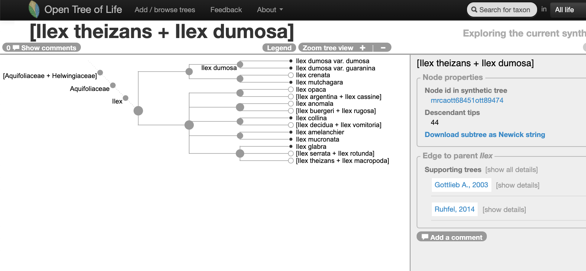
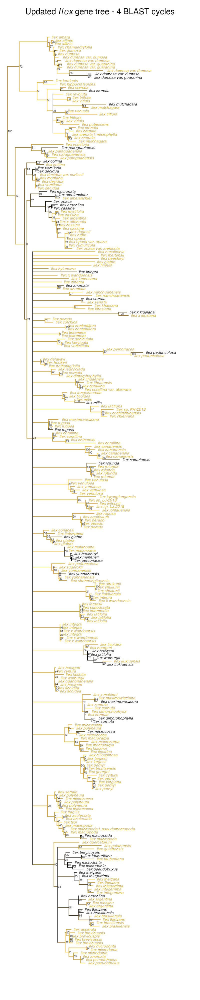
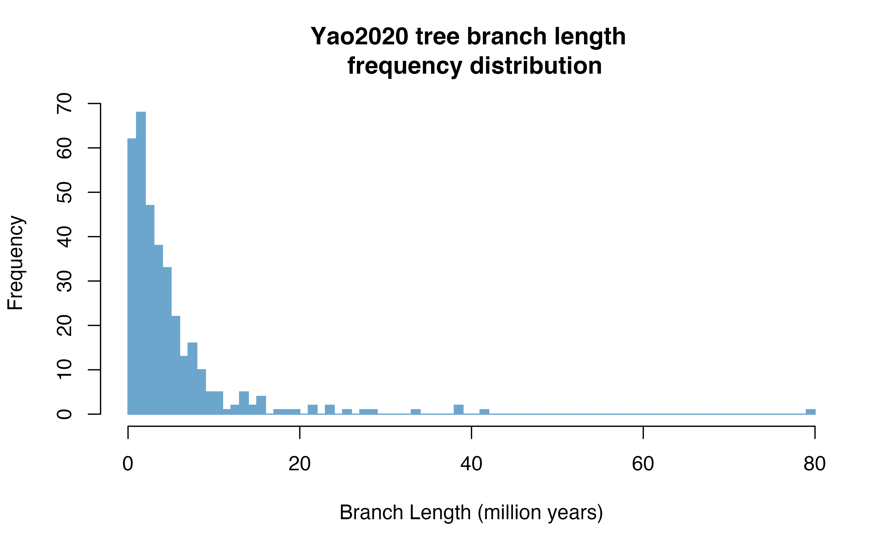

Physcraper Examples: the Hollies
ilex.Rmd at [Pixabay](https://pixabay.com/es/photos/holly-ilex-aquifolium-la-nieve-3012084/).](ilex-snow.jpg)
Ilex fruits and leaves in the snow. Image by Wolfgang Claussen at Pixabay.
I. Finding a tree to update
Using the Open Tree of Life website
Go to the Open Tree of Life website and use the “search for taxon” menu to look up for the taxon Ilex.
The screenshpt below shows the state of the genus Ilex in the Open Tree of Life synthetic tree on May 25, 2020. If you go to OpenTree’s website you can check out Ilex current state here.

Navigating into the tree, we notice that there might be two studies associated to this portion of the Open Tree synthetic tree.

Let’s verify that on the study curator of OToL.
Studies matching the word ‘ilex’ on the curator database, at the middle of year 2020. Some of these studies are not actually about the hollies, but other taxa that have the species epithet ilex, e.g., the holly oak Quercus ilex or the rodent Apodemus ilex

Using the R package rotl
Explain what a focal clade is.
There is a handy function that will search a taxon among the focal clades reported across trees.
| study_ids | n_trees | tree_ids | candidate | study_year | title | study_doi |
|---|---|---|---|---|---|---|
| ot_1984 | 1 | tree1 | 2020 | http://dx.doi.org/10.1111/jse.12567 | ||
| pg_2827 | 2 | tree6576, tree6577 | tree6577 | 2003 | Molecular analyses of the genus Ilex (Aquifoliaceae) in southern South America, evidence from AFLP and ITS sequence data | http://dx.doi.org/10.3732/ajb.92.2.352 |
It seems like the oldest tree, tree6577 from study pg_2827, is in the Open Tree of Life synthetic tree.
Let’s get it and plot it here:
original_tree <- rotl::get_study_tree(study_id = "pg_2827", tree_id = "tree6577")
#> Warning in build_raw_phylo(ncl, missing_edge_length): missing edge lengths are
#> not allowed in phylo class. All removed.
ape::plot.phylo(ape::ladderize(original_tree), type = "phylogram", cex = 0.3, label.offset = 1, edge.width = 0.5)
Now, let’s look at some properties of the tree:
ape::Ntip(original_tree) # gets the number of tips
#> [1] 48
ape::is.rooted(original_tree) # check that it is rooted
#> [1] TRUE
ape::is.binary(original_tree) # check that it is fully resolved
#> [1] FALSE
datelife::phylo_has_brlen(original_tree) # checks that it has branch lengths
#> [1] FALSEThe tree has 48 tips, is rooted, has no branch lengths and is not fully resolved, as you probably already noted. Also, labels correspond to the labels reported on the original study here. Other labels are available to use as tip labels. For example, you can plot the tree using the unified taxonomic names, or the taxonomic ids.
II. Getting the underlying alignment
From TreeBASE
Using physcraper and the arguments -tb and -no_est
physcraper_run.py -s pg_2827 -t tree6577 -tb -no_est -o data/pg_2827_tree6577Downloading the alignment directly from a repository
The alignments are here https://treebase.org/treebase-web/search/study/matrices.html?id=1091
On a mac you can do:
wget "http://purl.org/phylo/treebase/phylows/matrix/TB2:M2478?format=nexus" -o data-raw/alignments/T1281-M2478.nexIII. Starting a Physcraper a run
physcraper_run.py -s pg_2827 -t tree6577 -o data/pg_2827_tree6577physcraper_run.py -s pg_2827 -t tree6577 -a data-raw/alignments/T1281-M2478.nex -as nexus -o data/ilex-remoteIV. Reading the Physcraper results
Input files
Physcraper rewrites input files for a couple reasons: reproducibility, taxon name matching, and taxon reconciliation. It writes the config file down if none was provided
Run files
Files in here are also automatically written down by physcraper.
blast runs, alignments, raxml trees, bootstrap
The trees are reconstructed using RAxML, with tip labels corresponding to local ids (e.g., otu42009, otuPS1) and not taxon names (e.g., Helwingia japonica), nor taxonomic ids (e.g., ott or ncbi). Branch lengths are proportional to relative substitution rates. The RAxML tree with taxon names as tip labels is saved on the outputs_tag folder.
updated_tree_otus <- ape::read.tree(file = "../data/ilex-local/run_T1281-M2478/RAxML_bestTree.2020-06-29")
ape::plot.phylo(ape::ladderize(updated_tree_otus), type = "fan", cex = 0.25, label.offset = 0.01, edge.width = 0.5)
ape::add.scale.bar(cex = 0.3, font = 1, col = "black")
mtext("Updated tree - otu tags as labels", side = 3, line = -1)
Output files
A variety of files are automatically written down by physcraper.
A nexson tree with all types of tip labels is saved in here. From this tree, a tree with any kind of label can be produced. By default, the updtaed tree with taxon names as tip labels is saved in the output_tag folder as updated_taxonname.tre.
updated_tree_taxonname <- ape::read.tree(
file = "../data/pg_2827_tree6577/outputs_pg_2827tree6577/updated_taxonname.tre")
# ape::plot.phylo(ape::ladderize(updated_tree_taxonname), cex = 0.35)
updated_tree_taxonname$tip.label %in% c("Helwingia_japonica_otu420083", "Helwingia_chinensis_otu420099")
#> [1] FALSE FALSE FALSE FALSE FALSE FALSE FALSE FALSE FALSE FALSE FALSE FALSE
#> [13] FALSE FALSE FALSE FALSE FALSE FALSE FALSE FALSE FALSE FALSE FALSE FALSE
#> [25] FALSE FALSE FALSE FALSE FALSE FALSE FALSE FALSE FALSE FALSE FALSE FALSE
#> [37] FALSE FALSE FALSE FALSE FALSE FALSE FALSE FALSE FALSE FALSE FALSE FALSE
#> [49] FALSE FALSE FALSE FALSE FALSE FALSE FALSE FALSE FALSE FALSE FALSE FALSE
#> [61] FALSE FALSE FALSE FALSE FALSE FALSE FALSE FALSE FALSE FALSE FALSE FALSE
#> [73] FALSE FALSE FALSE FALSE FALSE FALSE FALSE FALSE FALSE FALSE FALSE FALSE
#> [85] FALSE FALSE FALSE FALSE FALSE FALSE FALSE FALSE FALSE FALSE FALSE FALSE
#> [97] FALSE FALSE FALSE FALSE FALSE FALSE FALSE FALSE FALSE FALSE FALSE FALSE
#> [109] FALSE FALSE FALSE FALSE FALSE FALSE FALSE FALSE FALSE FALSE FALSE FALSE
#> [121] FALSE FALSE FALSE FALSE FALSE FALSE FALSE FALSE FALSE FALSE FALSE FALSE
#> [133] FALSE FALSE FALSE FALSE FALSE FALSE FALSE FALSE FALSE FALSE FALSE FALSE
#> [145] FALSE FALSE FALSE FALSE FALSE FALSE FALSE FALSE FALSE FALSE FALSE FALSE
#> [157] FALSE FALSE FALSE FALSE FALSE FALSE FALSE FALSE FALSE FALSE FALSE FALSE
#> [169] FALSE FALSE FALSE FALSE FALSE FALSE FALSE FALSE FALSE FALSE FALSE FALSE
#> [181] FALSE FALSE FALSE FALSE FALSE FALSE FALSE FALSE FALSE FALSE FALSE FALSE
#> [193] FALSE FALSE FALSE FALSE FALSE FALSE FALSE FALSE FALSE FALSE FALSE FALSE
#> [205] FALSE FALSE FALSE FALSE FALSE FALSE FALSE FALSE FALSE FALSE FALSE FALSE
#> [217] FALSE FALSE FALSE FALSE FALSE FALSE FALSE FALSE FALSE FALSE FALSE FALSE
#> [229] FALSE FALSE FALSE FALSE FALSE FALSE FALSE FALSE FALSE FALSE FALSE FALSE
#> [241] FALSE FALSE FALSE FALSE FALSE FALSE FALSE FALSE FALSE FALSE FALSE FALSE
#> [253] FALSE FALSE FALSE FALSE FALSE FALSE FALSE FALSE FALSE FALSE FALSE FALSE
#> [265] FALSE FALSE FALSE FALSE FALSE FALSE FALSE FALSE FALSE FALSE FALSE FALSE
#> [277] FALSE TRUE TRUE
updated_tree <- ape::read.tree(file = "../data/pg_2827_tree6577/run_pg_2827tree6577_run4/RAxML_bestTree.2020-07-31")
updated_drop <- ape::drop.tip(updated_tree, c("otu420083", "otu420099"))
updated_sumtree <- ape::read.tree(file = "../data/pg_2827_tree6577/outputs_pg_2827tree6577/physcraper_pg_2827tree6577.tre")ape::plot.phylo(ape::ladderize(updated_tree_taxonname), type = "fan", cex = 0.25, label.offset = 0.01, edge.width = 0.5)
ape::add.scale.bar(cex = 0.3, font = 1, col = "black")
mtext("Updated tree - Taxon names as labels ", side = 3, line = -1)
V. Visualizing the Physcraper results
Visualizing new tips and taxa
An easy way to visualize the new tips added into the updated tree compared to the original tree is coloring the tips and branches from those new tips with a highlighting color. We will use a function defined in this package to do so.
The function takes as argument the paths to both the tree and the OTU info files:
# mytreefile = '../data/pg_2827_tree6577/run_pg_2827tree6577_run4/RAxML_bestTree.2020-07-31'
mytreefile = '../data/pg_2827_tree6577/outputs_pg_2827tree6577/physcraper_pg_2827tree6577.tre'
myotuinfofile = '../data/pg_2827_tree6577/outputs_pg_2827tree6577/otu_info_pg_2827tree6577.csv'And uses phytools::plotBranchbyTrait, so it takes all arguments from ape::plot.phylo, too:
plot_branches(treefile = mytreefile, otufile = myotuinfofile, type = "phylogram", cex = 0.25, edge.width = 0.5, tip_label = "taxon")
mtext(expression(Updated~italic(Ilex) ~ plain("gene tree, after 4 BLAST cycles")), side= 3, line=-1, cex = 0.5) Let’s get the summary of new tips:
summ <- summarize(treefile = mytreefile, otufile = myotuinfofile)
#> This updated tree has 48 original tips, representing 45 unique OTT taxa.
#> And 231 new tips representing 84 new OTT taxa added to the original tree.
#> It is 0.75% resolved.hist(updated_drop$edge.length, breaks=1400, col = "skyblue3",
border = "skyblue3", xlab= "Branch Length (substitution rate)",
main = "Updated Gottlieb2005 tree \n branch length frequency distribution")Even though the updated tree is 99% resolved, 321 branches are <0.01 and 133 are < 0.00001, effectively negligible. The longest branch is 0.1215869 and the smallest branch is 1.000000510^{-6}
Visualizing changes in phylogenetic relationships
How does the phylogenetic relationships from the updated tree compare to those from the original tree and other Ilex trees?
We will use the conflict tool of the OpenTree to visualize this.
The next figure shows in green the nodes resolved by the Gottlieb2005 tree and in blue the nodes that align with taxonomy: 
The following figure shows results from the conflict analysis in the updated Ilex tree. The blue nodes either align with phylogenetic relationships from the Gottlieb2005 tree or with taxonomy; the green nodes (approximately 20) resolve phylogenetic relationships that were not solved by Gottlieb2005; and the orange nodes conflict either with phylogenetic relationships shown in Gottlieb2005 or with taxonomy.

Let’s get the Yao2020 tree:
hist(yao2020$edge.length, col = "skyblue3", breaks = round(max(yao2020$edge.length)),
border = "skyblue3", xlab= "Branch Length (million years)",
main = "Yao2020 tree branch length \n frequency distribution")
Now we can compare the taxa in the updated Gottlieb2005 and in Yao2020:
comp <- compare(treefile = mytreefile, otufile = myotuinfofile, tree = yao2020)
#> The updated tree (from treefile) and the tree to compare (from tree)
#> contribute jointly with 152 distinct taxa that are in not in the original tree.
#> From this, 66 taxa are present in both trees.
#> The updated tree contributes 18 distinct taxa that are neither in original tree
#> nor in tree to compare.
#> The tree to compare has 134new tips and contributes 134 distinct taxa from which 68 are neither in original tree
#> nor in the updated tree.
#> The tree to compare has 41 taxa that are in original tree.
#> And 134 tips different from original, representing 68 new OTT taxa added to the original tree.
#> It is 0.99% resolved.The following figure shows results from the conflict analysis on the Yao2020 tree. Again, the blue nodes align either with Gottlieb2005 or with taxonomy, the green nodes (approximately 80) resolve phylogenetic relationships that were not solved by Gottlieb2005, and the orange nodes conflict either with phylogenetic relationships from Gottlieb2005 or with taxonomy.

Acknowledgments
Research was supported by the grant “Sustaining the Open Tree of Life”, National Science Foundation ABI No. 1759838, and ABI No. 1759846.
Computer time was provided by the Multi-Environment Research Computer for Exploration and Discovery (MERCED) cluster from the University of California, Merced (UCM), supported by the NSF Grant No. ACI-1429783.